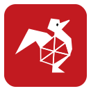

Certificates, Courses & Schools
{kind=link}
{kind=link}


Hello, I am Bartek Nowak
Hello, I am
Bartek
Nowak, PhD
07.2022
Promoting discontinuous phase transitions by the quenched disorder within the multistate \(q\)-voter model
Bartłomiej Nowak, Katarzyna Sznajd-Weron
Physical Review E, 106
05.2022
The threshold model with anticonformity under random sequential updating
Bartłomiej Nowak, Michel Grabisch,Katarzyna Sznajd-Weron
Physical Review E, 105
12.2020
Discontinuous phase transitions in the multi-state noisy \(q\)-voter model: quenched vs. annealed disorder
Bartłomiej Nowak, Bartosz Stoń, Katarzyna Sznajd-Weron
Scientific Reports 11, 6098
07.2020
Competing local and global interactions in social dynamics: How important is the friendship network?
Arkadiusz Jędrzejewski, Bartłomiej Nowak, Angelika Abramiuk, Katarzyna Sznajd-Weron
Chaos 30, 073105
05.2020
Symmetrical threshold model with independence on random graphs
Bartłomiej Nowak, Katarzyna Sznajd-Weron
Physical Review E 101, 052316
04.2019
Homogeneous Symmetrical Threshold Model with Nonconformity: Independence versus Anticonformity
Bartłomiej Nowak, Katarzyna Sznajd-Weron
Complexity 2019, 5150825
05.2022
Talk: "Promoting discontinuous phase transitions by the quenched disorder withinthe multi-state \(q\)-voter model"01.2022
Talk: "The existence of discontinuous phase transition under the quenched disorder: \(q\)-voter model with anticonformity"10.2021
Talk: "How to affect phase transition? The \(q\)-voter model study"07.2021
Poster: "The existence of discontinuous phase transition under the quenched disorder: \(q\)-voter model with anticonformity"06.2021
Talk: "Multi-state opinion dyamics, \(q\)-voter model"02.2021
Talk: "Discontinuous phase transitions in descrete opinion dynamics models"12.2020
Talk: "Homogeneous Symmetrical Threshold Model with Independence"09.2020
Talk: "In search for the social hysteresis - the symmetrical threshold model with nonconformity"04.2020
Talk: "Multi-state noisy \(q\)-voter model: quenched vs. annealed disorder"09.2019
Poster: "Homogeneous Symmetrical Threshold Model with Nonconformity"09.2019
Poster: "Competing local and global interactions in the social dynamics: How important is the friendship network?"07.2019
Talk: "Homogeneous symmetrical threshold model with nonconformity: independence vs. anticonformity"06.2019
Talk: "Homogeneous symmetrical threshold model with nonconformity: independence vs. anticonformity"06.2019
Poster: "Competing local and global interactions in the social dynamics: How important is the friendship network?"06.2019
Talk: "The Homogeneous Symmetrical Threshold Model with Independence"02.2019
Talk: "Funkcja do opisu danych chromatorgraficznych wyprowadzona z modelu dyfuzjnego"11.2018
Talk: "Dekompozycja szeregów czasowych - identyfikacja trendów długoterminowych i wahań sezonowych"